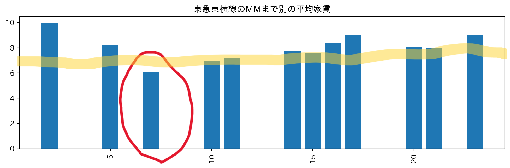
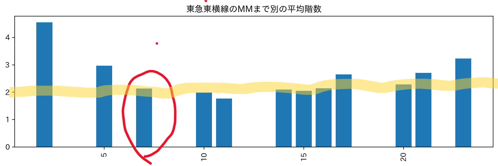
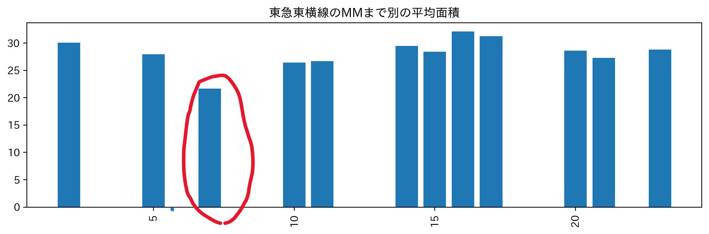
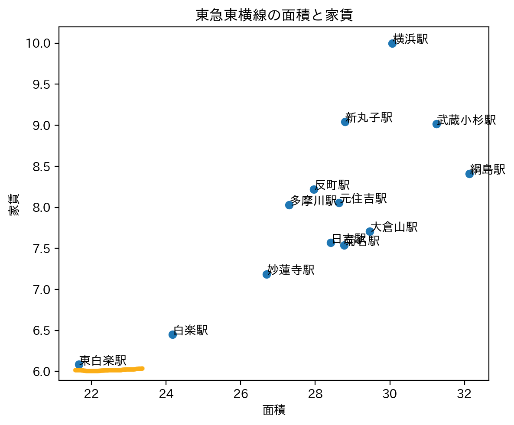

ターゲット：女性
みなとみらいキャンパス在学
サークル等で横キャンへもよく通う
条件：①階数が二階以上（防犯上）
②東横線沿い（横キャン、みなキャンに通いやすいため）
③家賃７万以下

マーク部分の家賃がだいたい６～７万ぐらい（③クリア部分）

マーク部分の階数が二階（①クリア部分）
この二つをいい感じにクリアしているのが、赤まるの部分！

大学生の一人暮らしの人が住むにはいいぐらいの広さ（ネット情報）が２０ぐらいなため、赤まる部分は広さも申し分なさそう
また、東横線沿いのとこ（②クリア）
よってこの赤まるにあたる駅が最適であると考えられる！
じゃあこの駅はどこか。。。

このグラフからおそらく東白楽駅であることが分かる。
したがって東白楽駅周辺のところがみなキャン横キャンともに近く、家賃も高すぎず、ターゲットの条件に沿ったものが多いため
東白楽駅周辺の物件をおすすめします！